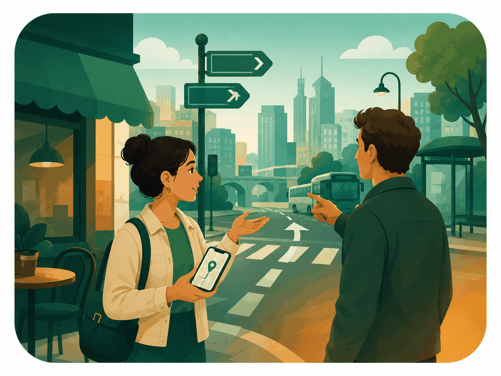

City vocabulary — streets, parks, cafés, bus stops. Learn how to ask the way and give directions back. Reinforce three common traps: Do vs Are, Present Simple vs Present Continuous, and the article the with places.
Tap a card — it flips. Shows the translation and an example. Say each one out loud twice.
Скажи вслух за 60 секунд: поверни направо · поверни налево · прямо · напротив · рядом · между · за · перед · на углу · перейди улицу · светофор · за углом. Повтори трижды.
Read the dialogue silently first, then aloud for both roles. Notice how the local explains the way — short sentences, simple word order.
The most common trap. Do — for action verbs (live, go, like, work). Are — for adjectives, professions, location, long -ing forms.
Simple — what's usual, regular, always. Markers: every day, usually, often, sometimes, never. Continuous — what's happening right now. Markers: now, at the moment, look!
Simple rule: the + specific place (the bank, the park, the museum). No article — work, home, school, bed (when it's the routine, not the building).
Запомни связку: work, home, school, bed — без the (когда говорим про процесс, не про здание). Все остальные конкретные места — the: the park, the bank, the museum, the post office, the corner, the bus stop, the café.
Imagine a tourist comes up to you asking for directions. Use the words from section 1. Explain each route in 4–5 sentences.
Карта в голове — ты стоишь у выхода из метро. Перед тобой главная улица. На углу справа — кафе. За кафе — банк. Дальше прямо — парк. Через дорогу от парка — музей. Слева от музея — почта.
Write 5–7 sentences: how to walk from your house to the nearest café. Use go straight, turn left/right, next to, opposite, on the corner. Simple sentences only — don't overcomplicate.
Answer each question aloud in a full sentence. No short "yes/no". Tap ▶ to hear the question first if you need.